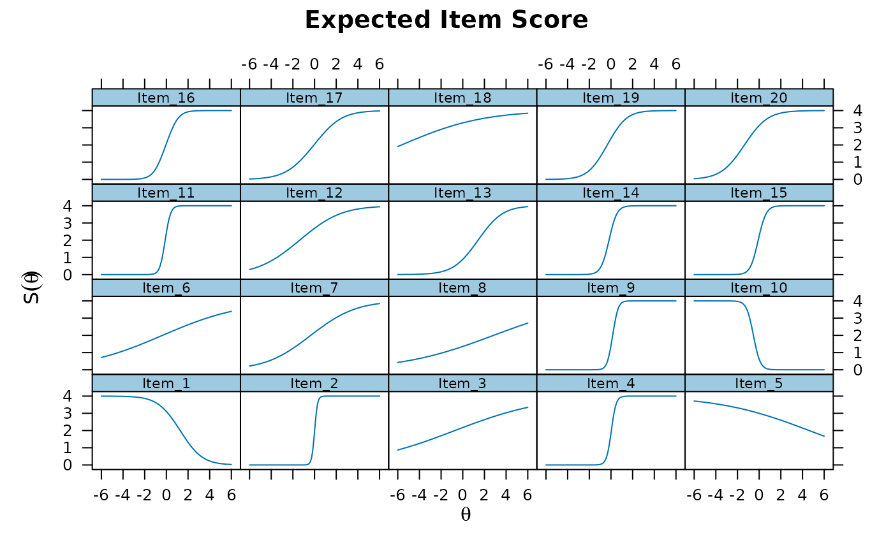
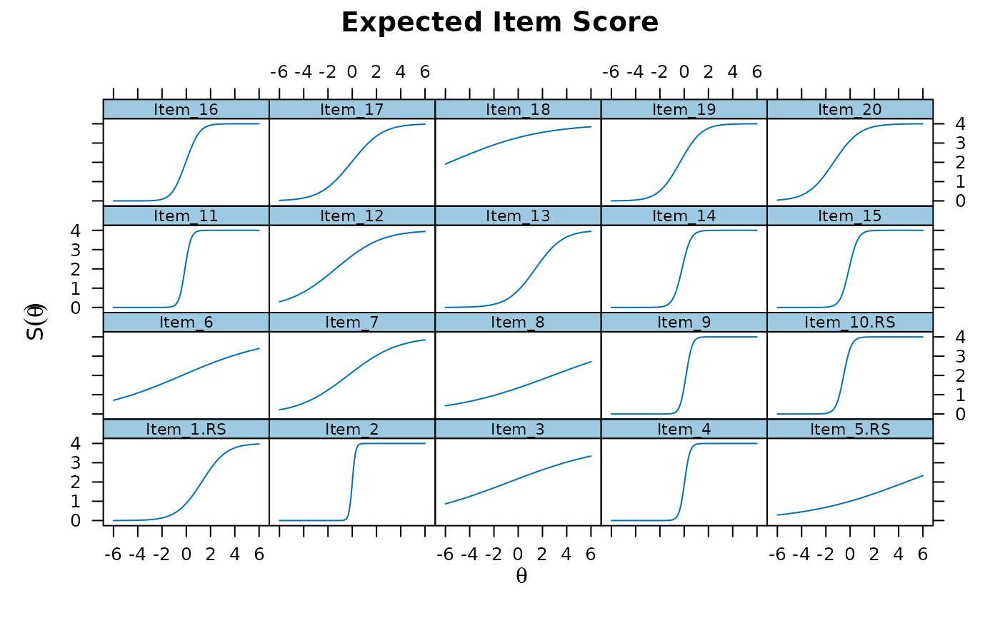

Reverse score specific items given empirical range or specific scoring range.
Arguments
- data
an object of class
data.frame,matrix, ortablewith the response patterns- which
names of items or column integer location in
datathat should be rescored. If missing the all columns indatawill be reverse scored- range
(optional) a named
listto specify the low and high score ranges. Specified names must match the names found indata, and each element of this list should contain only two values. If items specified inwhichare omitted from this list then the empirical min/max information will be used instead- append
character vector indicating what to append to the item names that have been rescored
Value
returns the original data object with the specified
items reverse scored replacing the original scoring scheme
References
Chalmers, R., P. (2012). mirt: A Multidimensional Item Response Theory Package for the R Environment. Journal of Statistical Software, 48(6), 1-29. doi:10.18637/jss.v048.i06
Author
Phil Chalmers rphilip.chalmers@gmail.com
Examples
a <- rlnorm(20)
a[c(1,5,10)] <- -a[c(1,5,10)]
diffs <- t(apply(matrix(runif(20*4, .3, 1), 20), 1, cumsum))
diffs <- -(diffs - rowMeans(diffs))
d <- diffs + rnorm(20)
dat <- simdata(a,d,itemtype='graded', N=300)
head(dat)
#> Item_1 Item_2 Item_3 Item_4 Item_5 Item_6 Item_7 Item_8 Item_9 Item_10
#> [1,] 4 4 2 4 4 4 2 4 4 0
#> [2,] 4 4 1 2 4 0 4 0 4 0
#> [3,] 3 0 4 0 4 0 4 0 0 0
#> [4,] 0 4 3 4 4 4 4 4 4 0
#> [5,] 0 0 0 1 4 4 0 1 1 1
#> [6,] 1 0 0 0 3 1 3 0 0 0
#> Item_11 Item_12 Item_13 Item_14 Item_15 Item_16 Item_17 Item_18 Item_19
#> [1,] 4 4 0 4 4 4 1 4 1
#> [2,] 4 0 2 4 4 2 0 1 4
#> [3,] 4 2 0 0 0 2 0 1 4
#> [4,] 4 4 3 4 4 4 4 4 4
#> [5,] 4 2 1 0 4 2 2 4 3
#> [6,] 0 4 3 3 1 1 0 1 2
#> Item_20
#> [1,] 4
#> [2,] 4
#> [3,] 3
#> [4,] 4
#> [5,] 0
#> [6,] 4
# \donttest{
# fitted model has negative slopes due to flipped scoring
mod <- mirt(dat)
coef(mod, simplify=TRUE)$items
#> a1 d1 d2 d3 d4
#> Item_1 -1.1171924 2.4296469 1.73288248 1.26067403 0.2297665
#> Item_2 7.7979262 0.6344815 0.10842378 -0.40343108 -0.5373447
#> Item_3 0.2629820 1.0227374 0.40406181 0.05877758 -0.7416570
#> Item_4 4.7612348 0.4181758 0.09659425 -0.39620617 -0.8081206
#> Item_5 -0.2508314 1.7270595 1.44413339 1.00569169 0.4374845
#> Item_6 0.2825226 0.6987403 0.33984035 -0.10978202 -0.5318410
#> Item_7 0.5483014 1.1687726 0.61066779 -0.17876210 -0.8428922
#> Item_8 0.2589735 0.1645560 -0.50937611 -0.97348674 -1.6301845
#> Item_9 4.7482498 0.4760300 -0.17069300 -1.25756806 -2.0364066
#> Item_10 -3.4544141 -0.9539374 -1.70812723 -1.99858134 -2.6710047
#> Item_11 4.5041025 1.3508597 0.82245138 0.38868246 -0.6469871
#> Item_12 0.6126098 2.0281560 1.23506017 0.35720032 -0.2322765
#> Item_13 0.9980961 -0.4148028 -1.06332972 -1.72305387 -2.4443652
#> Item_14 2.9404701 1.4499665 0.65492514 0.16151658 -0.1173663
#> Item_15 3.0592768 1.0422137 0.65828309 0.23004194 -0.8853085
#> Item_16 2.1588771 1.2437703 0.88064791 -0.61804921 -1.1362945
#> Item_17 0.9028578 1.2465837 0.38556807 -0.45153380 -0.9196150
#> Item_18 0.2863930 2.4301695 1.84214734 1.30810063 0.9140620
#> Item_19 1.3145920 1.6329817 0.90542889 -0.07961438 -0.6340161
#> Item_20 1.0298438 2.3208002 1.75183674 0.90002111 0.6407807
plot(mod, type = 'itemscore')

# }
# reverse the scoring for items 1, 5, and 10 only using empirical min/max
revdat <- reverse.score(dat, c('Item_1', 'Item_5', 'Item_10'))
head(revdat)
#> Item_1.RS Item_2 Item_3 Item_4 Item_5.RS Item_6 Item_7 Item_8 Item_9
#> [1,] 0 4 2 4 0 4 2 4 4
#> [2,] 0 4 1 2 0 0 4 0 4
#> [3,] 1 0 4 0 0 0 4 0 0
#> [4,] 4 4 3 4 0 4 4 4 4
#> [5,] 4 0 0 1 0 4 0 1 1
#> [6,] 3 0 0 0 1 1 3 0 0
#> Item_10.RS Item_11 Item_12 Item_13 Item_14 Item_15 Item_16 Item_17 Item_18
#> [1,] 4 4 4 0 4 4 4 1 4
#> [2,] 4 4 0 2 4 4 2 0 1
#> [3,] 4 4 2 0 0 0 2 0 1
#> [4,] 4 4 4 3 4 4 4 4 4
#> [5,] 3 4 2 1 0 4 2 2 4
#> [6,] 4 0 4 3 3 1 1 0 1
#> Item_19 Item_20
#> [1,] 1 4
#> [2,] 4 4
#> [3,] 4 3
#> [4,] 4 4
#> [5,] 3 0
#> [6,] 2 4
# compare
apply(dat[,c(1,5,10)], 2, table)
#> Item_1 Item_5 Item_10
#> 0 35 46 179
#> 1 23 12 23
#> 2 21 23 8
#> 3 57 37 17
#> 4 164 182 73
apply(revdat[,c(1,5,10)], 2, table)
#> Item_1.RS Item_5.RS Item_10.RS
#> 0 164 182 73
#> 1 57 37 17
#> 2 21 23 8
#> 3 23 12 23
#> 4 35 46 179
# \donttest{
# slopes all positive now
mod2 <- mirt(revdat)
coef(mod2, simplify=TRUE)$items
#> a1 d1 d2 d3 d4
#> Item_1.RS 1.1182344 -0.2276345 -1.2585807 -1.73084542 -2.4277274
#> Item_2 7.8235698 0.6524445 0.1261525 -0.38602040 -0.5201021
#> Item_3 0.2632045 1.0232150 0.4045218 0.05926287 -0.7411866
#> Item_4 4.7761244 0.4286916 0.1068883 -0.38632467 -0.7986421
#> Item_5.RS 0.2510760 -0.4370332 -1.0052289 -1.44369998 -1.7266003
#> Item_6 0.2827955 0.6992590 0.3403556 -0.10926752 -0.5313230
#> Item_7 0.5487299 1.1697835 0.6116507 -0.17771403 -0.8418820
#> Item_8 0.2591667 0.1650238 -0.5089098 -0.97301720 -1.6297131
#> Item_9 4.7606067 0.4861014 -0.1609173 -1.24853436 -2.0280968
#> Item_10.RS 3.4634667 2.6802518 2.0073365 1.71669942 0.9620659
#> Item_11 4.5179204 1.3616041 0.8328228 0.39869560 -0.6378781
#> Item_12 0.6132529 2.0293027 1.2362469 0.35825699 -0.2310679
#> Item_13 0.9990765 -0.4129181 -1.0614558 -1.72125802 -2.4426937
#> Item_14 2.9461576 1.4563648 0.6611071 0.16754860 -0.1114038
#> Item_15 3.0649176 1.0485816 0.6646115 0.23628993 -0.8793653
#> Item_16 2.1617219 1.2479992 0.8848828 -0.61395520 -1.1322718
#> Item_17 0.9038909 1.2483193 0.3872151 -0.44980307 -0.9180791
#> Item_18 0.2866437 2.4306786 1.8426855 1.30858320 0.9146260
#> Item_19 1.3159613 1.6354544 0.9078839 -0.07718882 -0.6315840
#> Item_20 1.0310717 2.3228460 1.7538611 0.90199444 0.6427890
plot(mod2, type = 'itemscore')

# }
# use different empirical scoring information due to options not used
# 0 score not observed for item 1, though should have been rescored to a 4
dat[dat[,1] == 0, 1] <- 1
table(dat[,1])
#>
#> 1 2 3 4
#> 58 21 57 164
# 4 score not observed for item 5, though should have been rescored to a 0
dat[dat[,5] == 4, 5] <- 3
table(dat[,5])
#>
#> 0 1 2 3
#> 46 12 23 219
# specify theoretical scoring values in the range list
revdat2 <- reverse.score(dat, c('Item_1', 'Item_5', 'Item_10'),
range = list(Item_1 = c(0,4), Item_5 = c(0,4)))
head(revdat2)
#> Item_1.RS Item_2 Item_3 Item_4 Item_5.RS Item_6 Item_7 Item_8 Item_9
#> [1,] 1 4 2 4 1 4 2 4 4
#> [2,] 1 4 1 2 1 0 4 0 4
#> [3,] 2 0 4 0 1 0 4 0 0
#> [4,] 4 4 3 4 1 4 4 4 4
#> [5,] 4 0 0 1 1 4 0 1 1
#> [6,] 4 0 0 0 1 1 3 0 0
#> Item_10.RS Item_11 Item_12 Item_13 Item_14 Item_15 Item_16 Item_17 Item_18
#> [1,] 4 4 4 0 4 4 4 1 4
#> [2,] 4 4 0 2 4 4 2 0 1
#> [3,] 4 4 2 0 0 0 2 0 1
#> [4,] 4 4 4 3 4 4 4 4 4
#> [5,] 3 4 2 1 0 4 2 2 4
#> [6,] 4 0 4 3 3 1 1 0 1
#> Item_19 Item_20
#> [1,] 1 4
#> [2,] 4 4
#> [3,] 4 3
#> [4,] 4 4
#> [5,] 3 0
#> [6,] 2 4
table(dat[,1])
#>
#> 1 2 3 4
#> 58 21 57 164
table(revdat2[,1])
#>
#> 1 2 3 4
#> 164 57 21 58
table(dat[,5])
#>
#> 0 1 2 3
#> 46 12 23 219
table(revdat2[,5])
#>
#> 1 2 3 4
#> 219 23 12 46